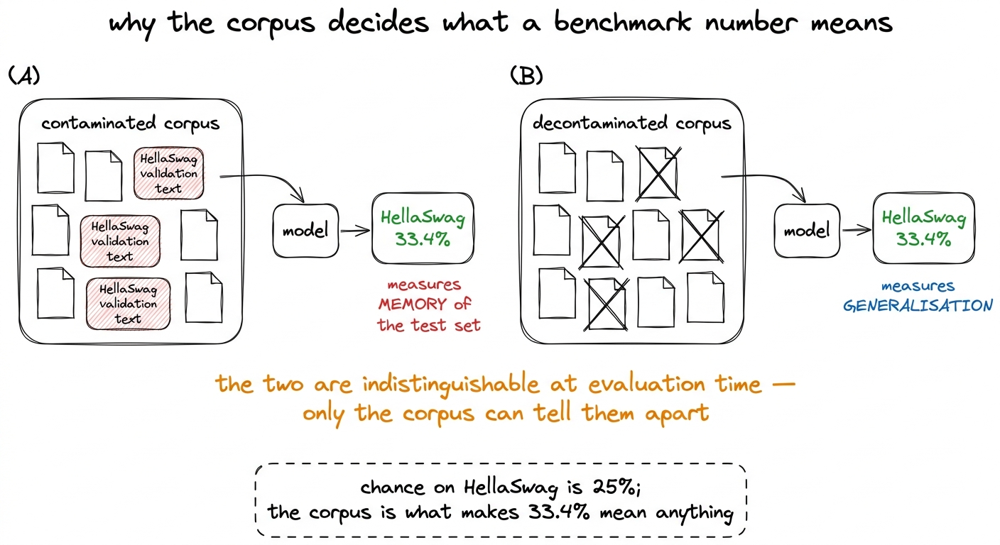
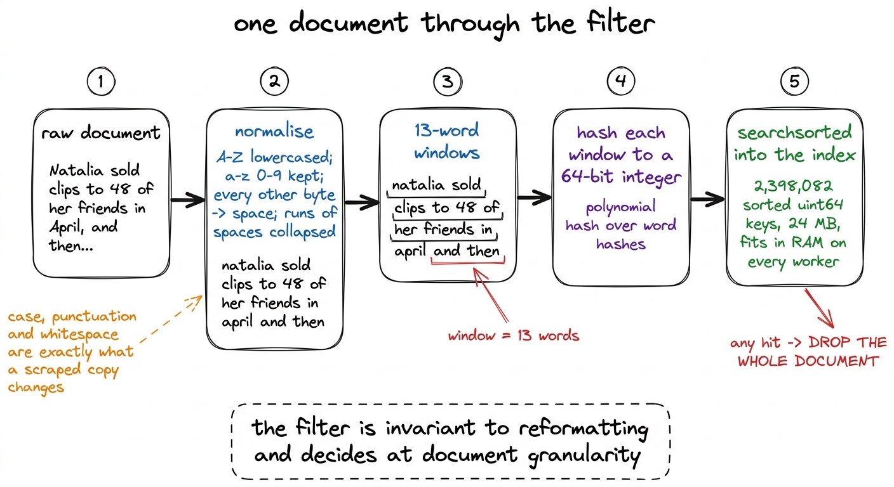
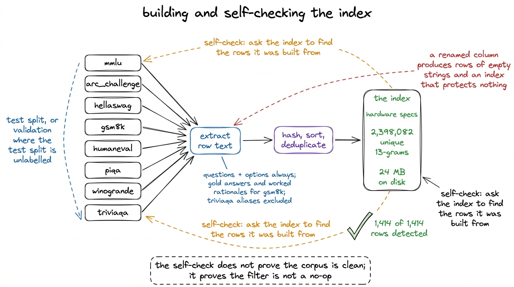
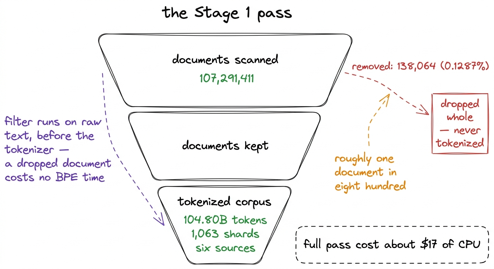
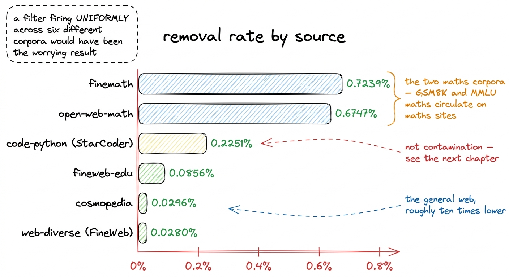
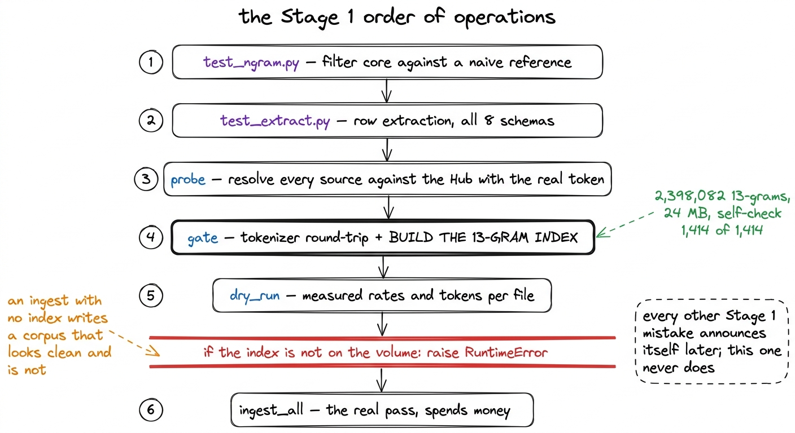

Decontamination, and the report that makes the numbers defensible
2,398,082 unique 13-grams over eight eval sets, 107,291,411 documents scanned, 138,064 removed, and why the maths corpora dropping ten times more than the web is the result that makes the filter believable.
Our model finishes at 33.4% on HellaSwag, against a chance level of 25%. That number is a measurement of something only if the HellaSwag validation set was absent from the 104.80 billion tokens the model read. If any meaningful fraction of those questions and their endings were sitting in the crawl, the number measures recall of text the model has already seen, and it measures it in a way that no amount of careful evaluation methodology can detect afterwards. The evaluation harness cannot tell the difference between a model that has learned to complete sentences and a model that has memorised these particular sentences. Only the corpus can.
So the corpus was filtered before a single token was written. 107,291,411 documents were scanned and 138,064 were removed, a rate of 0.1287%. This chapter is about the machinery that produced those two numbers, and about the one result in the report that makes us believe the filter was doing what we asked rather than firing at random.

figure rendering · The same score, from two corpora. Nothing downstream of training can sFour decisions that define the filter
Before any code, four choices had to be made, and each one has a defensible alternative that we rejected for a stated reason.
The unit is the document, and a matching document is dropped whole. The alternative is to excise the matching span and keep the rest of the page. That is tempting because it preserves tokens, and it is wrong for a simple reason: a web page that contains thirteen consecutive words of a GSM8K problem is very unlikely to contain only those thirteen words of it. It is a page about GSM8K, or a scraped copy of the benchmark, or a tutorial that walks through several of its problems. Truncation removes the evidence of contamination and keeps the contamination. Dropping the document whole costs us a page and removes the question entirely.
The filter runs on raw text, before tokenization. n-grams here are defined over words, not over BPE pieces, so running the filter after tokenization would mean either decoding every document back to text or comparing sequences of subword ids. The second option is worse than it sounds: the same sentence tokenizes differently depending on the whitespace and capitalisation around it, so a BPE-level filter is sensitive to exactly the reformattings a scraped benchmark goes through. Running before tokenization also means a dropped document costs nothing to tokenize, which matters when the pass is CPU-bound and the whole thing was budgeted at about $17 of CPU.
n-grams are defined over normalised words. The normalisation is a byte translation table: A-Z lowercased, a-z and 0-9 kept, and every other byte, including all non-ASCII, replaced by a space, with runs of spaces collapsed to one.1 Because every byte at or above 128 becomes a space, CJK text contributes no n-grams at all. That is a real coverage hole and an acceptable one here, since all eight benchmarks in the eval suite are English or Python. A copy of a benchmark that has been through a content management system, a PDF extractor and a blog theme differs from the original in case, punctuation and whitespace, and in almost nothing else. Normalising those three away is what makes the filter match the copies rather than only the original.
The window is thirteen words. Long enough that ordinary English does not reproduce a window by coincidence, short enough that a single reformatted question still contains several matching windows. It is also the reason the filter has a coverage limit rather than being total: a benchmark row shorter than thirteen words produces no n-gram at all and cannot be filtered against. The next chapter reports the coverage figure for each of the eight sets.

figure rendering · The path a single document takes. Membership is a binary search into aThe index
The eval suite is eight benchmarks: MMLU, ARC-Challenge, HellaSwag, GSM8K, HumanEval, PIQA, WinoGrande and TriviaQA. For each one, the split that gets indexed is the split that gets reported on. Where the true test split is unlabelled, the validation split is what the field actually scores against, so the validation split is what has to be removed.2 This applies to HellaSwag, PIQA and WinoGrande. Indexing an unlabelled test split for these would produce a report that looks complete and protects nothing, because the numbers everyone quotes come from validation.
What counts as "the benchmark text" is a judgement call, and it sets how aggressive the filter is. Questions and contexts always go in, because that is the part a contaminated page would contain. Answer options always go in as well, since HellaSwag and PIQA are essentially nothing but their options and a page quoting the endings would otherwise survive. Gold answers and worked rationales go in for GSM8K, because the worked solution is the leak. TriviaQA's answer aliases are excluded.3 The aliases are single entities such as a city name. A thirteen-word window over them either fails to form at all or matches ordinary prose that has nothing to do with the benchmark, so indexing them buys no protection and costs real documents.
Extracted and hashed, the eight sets produce 2,398,082 unique 13-grams, stored as a sorted uint64 array with a per-hash benchmark id for attribution. On disk that is 24 MB, which is small enough to load on every ingest worker and hold in RAM for the whole pass. That is why membership is a searchsorted rather than a Bloom filter: at this size there is no reason to accept a false-positive budget at all.
The check that the index is not empty
The failure mode that worries us most is not a filter that misses a contaminated document. It is a filter that silently indexes nothing.
Benchmark repositories rename columns. If hellaswag renames endings, the extractor still runs, still produces one row per example, and produces rows of empty strings. The index builds. The report prints. The ingest passes. Every downstream artefact looks exactly as it looks when the filter is working, and the corpus is undefended.
Two guards address this. The first is a column check that compares the columns the registry expects against the columns the loaded split actually has, and raises on any difference. The second is the one that would catch a subtler version: after the index is built, it is asked to detect the very rows it was built from.
# The index must detect the very rows it was built from. This has caught a
# column rename before, where extraction produced rows of empty strings.
checked = failed = 0
for name, texts in per_benchmark.items():
for t in texts[:200]:
if text_ngram_hashes(t).size == 0:
continue
checked += 1
hit, which = idx.check(t)
if not hit or name not in which:
failed += 1Rows too short to produce a 13-gram are skipped rather than counted as failures, since a row with no n-grams cannot be detected by an n-gram index and calling that a failure would only train us to ignore the check. Everything else must come back with a hit attributed to its own benchmark. 1,414 rows checked, 1,414 detected, zero missed.
That result proves nothing about the corpus. It proves that the extraction, the hashing, the sort, the deduplication and the lookup compose into something that identifies benchmark text as benchmark text, which is the necessary condition for the corpus numbers to mean anything at all. A self-check that passes trivially is worth writing anyway, because the day it fails is the day it saves an entire evaluation.

figure rendering · The index build. The loop on the right is the guard against the failurThe pass
With the index on the volume, the full ingest ran across six sources. Every document was normalised, hashed, looked up, and either dropped or handed to the tokenizer.
| documents scanned | 107,291,411 |
| documents removed | 138,064 |
| removal rate | 0.1287% |
| corpus after filtering | 104.80B tokens in 1,063 shards |
| cost of the full pass | ~$17 of CPU |
A rate of roughly one document in eight hundred is the sort of number that invites two opposite objections. One is that it is too small to matter, and the other is that it is too small to be real. Neither survives contact with what the filter is looking for. Benchmark test sets are a few thousand rows each; eight of them together are a small number of documents relative to a hundred million, and a filter that removed several percent of a web crawl on the grounds of benchmark overlap would be reporting a broken hash function rather than a contaminated corpus.
What makes the rate believable is not its size. It is its shape across sources.

figure rendering · The complete Stage 1 pass in one shape. The filter sits above the tokeThe per-source table, and the argument it supports
| source | documents scanned | removed | rate |
|---|---|---|---|
| fineweb-edu | 62,245,000 | 53,266 | 0.0856% |
| web-diverse (FineWeb) | 20,034,526 | 5,604 | 0.0280% |
| code-python (StarCoder) | 12,866,649 | 28,968 | 0.2251% |
| finemath | 4,605,913 | 33,342 | 0.7239% |
| open-web-math | 2,271,277 | 15,325 | 0.6747% |
| cosmopedia | 5,268,046 | 1,559 | 0.0296% |
The two maths corpora are the result worth reading. finemath dropped 0.7239% of its documents and open-web-math dropped 0.6747%, against fineweb-edu's 0.0856%. That is roughly eight and a half times the rate of the web spine, and more than twenty times the rate of plain FineWeb.
That is the shape the eval suite predicts. Two of the eight indexed benchmarks are mathematics: GSM8K in its entirety, and the mathematics subjects within MMLU.4 GSM8K is not one of the benchmarks r1 was evaluated on; it is a post-training benchmark and was deliberately not run. It is indexed anyway, because the corpus is shared across the whole ladder and a corpus is decontaminated once, for every evaluation anyone might later want to run on anything trained from it. Grade-school word problems and multiple-choice maths questions circulate on maths sites. They are quoted in forum threads, reproduced in worked-solution blog posts, packaged into worksheets, and scraped back into web crawls. A corpus curated specifically for mathematical content is precisely where copies of a mathematics benchmark should concentrate, and a filter built to find them should fire there hardest.
The inverse statement is the one that carries the weight. If the removal rate had been flat across all six sources, the filter would have been suspect. A uniform rate would mean the filter was responding to something the six corpora share, which is ordinary English, rather than to the specific text of eight benchmarks. Contamination is not uniformly distributed, because benchmarks are not uniformly distributed; a measurement of contamination that comes out uniform is measuring its own hash collisions. We did not decide in advance what per-source rates would count as convincing, which weakens this as evidence. What we can say is that the ordering the eval suite implies before the pass — maths corpora highest, general web lowest — is the ordering that came back.

figure rendering · Removal rate per source. The spread is the evidence; a flat bar chartThe third-highest rate belongs to code-python at 0.2251%, and it is not contamination. It is an artefact of what normalisation does to punctuation-heavy text, and it is the subject of the next chapter, which is about a filter that fired hard and found nothing.
Why the ingest refuses to run
There is one line in the ingest worker that matters more than its length suggests.
if not Path(INDEX_PATH).exists():
raise RuntimeError("no decontamination index — run build_index first")
idx = NgramIndex.load(INDEX_PATH)The ingest will not start without the index on the volume. Not a warning, not a default to an empty index, not a flag to proceed anyway.
The reasoning is about which failures are recoverable. Nearly every mistake in Stage 1 announces itself: a wrong parquet prefix ingests the wrong dataset and the token counts come out impossible, a mangled shard name makes the loader raise, a tokenizer regression fails the round-trip gate. Those cost time and are found. An ingest that runs with no index is different. It produces shard files of exactly the right format, in exactly the right count, with a plausible token histogram, and a decontamination report showing zero documents removed, which is indistinguishable from a clean corpus if nobody thinks to ask why the number is zero. Every artefact downstream of it looks correct. The model trains normally. The benchmark numbers come out, and they are not measurements.
It is the one Stage 1 failure mode that cannot be detected after the fact. The only place to catch it is before the pass starts, which is where the check lives.

figure rendering · The pipeline, and the one gate that is a hard stop rather than a warniWhat the report is for
The deliverable of Stage 1 is not only a tokenized corpus. It is the corpus together with a removal report that a reader can disagree with.
The report carries per-benchmark match counts, per-source removal rates, and a sample of the documents that were removed, so that "the decontamination report was reviewed" describes an activity rather than a checkbox. The sample is the part that repaid the effort. Reading what a filter actually removed is how we found that one of the six sources was firing for a reason that had nothing to do with contamination, which is a finding we would have missed entirely from the rates alone.
That is the next chapter. HumanEval matched 88.78 times per indexed n-gram, against 0.02 for HellaSwag, and every removed document we read was ordinary Python.